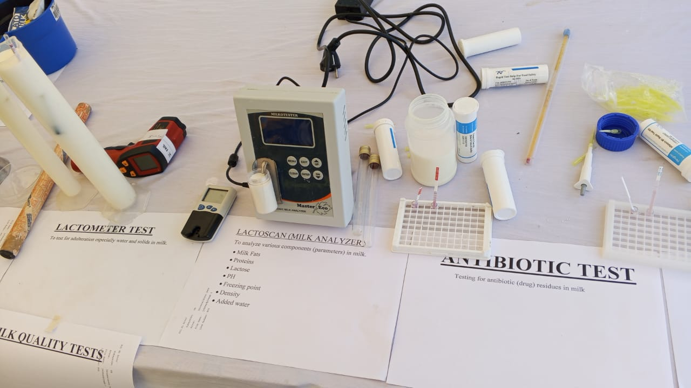
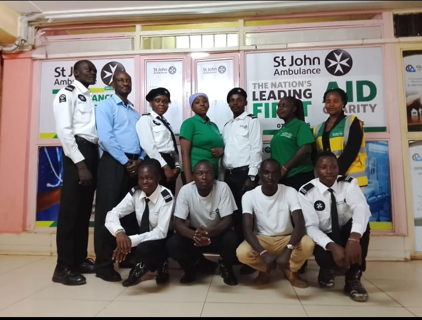
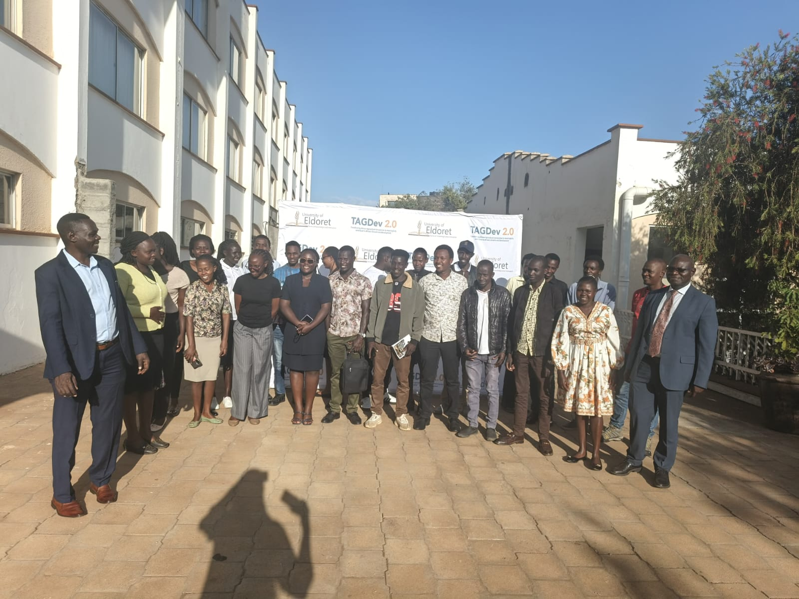

Portfolio Gallery
Glimpses of my work in the field, classroom, and community.






Passionate about education, agriculture, leadership, community empowerment, and sustainable development. Dedicated to empowering communities through practical knowledge and continuous learning.
Get to know my professional journey and core competencies.

As a multifaceted professional bridging the gap between education and practical agricultural application, I strive to create sustainable development models. My approach combines evidence-based research, hands-on mentorship, and community-driven initiatives.
To educate and empower individuals with sustainable agricultural practices and leadership skills.
A society where agricultural innovation and quality education drive community prosperity.
Professional solutions tailored for organizational and community success.
Expert advice on crop management, soil health, and sustainable farming practices to maximize yield and environmental conservation.
Developing and delivering comprehensive educational programs for students, farmers, and organizational staff.
Conducting field research, data collection, and analysis for agricultural innovation and community development projects.
Designing and implementing grassroots initiatives aimed at poverty reduction, food security, and capacity building.
End-to-end management of agricultural and educational projects, ensuring objectives are met within budget and timelines.
Guiding the next generation of professionals through structured mentorship, career counseling, and leadership workshops.
A track record of professional growth and continuous learning.
Leading agricultural extension programs. Implementing sustainable farming initiatives and training local farmers on modern agricultural techniques.
Achievement: Increased crop yield by 25% among participating farmer groups.
Teaching Practice
Designed and executed lesson plans for Agricultural Science, translating complex scientific principles into practical learning.
Managed laboratory experiments and practical field activities, boosting student engagement in sustainable farming concepts.
Assessment & Mentorship: Evaluated student performance through continuous assessment tests (CATs) and mentored students in science-related co-curricular projects.
Conducted field assessments, advising local dairy farmers and handlers on best hygiene practices, proper milk handling, and storage. Assisted in data collection and monitoring of dairy distribution routes to support policy enforcement and market transparency.
Financial Oversight: Managed budgeting, fund allocation, and financial reporting for university-wide environmental initiatives and field projects. Resource Allocation: Maintained financial records and audited expenditures for student-led sustainability drives and tree-planting campaigns.
Strategic Planning & Operation: Spearheaded operational planning and logistics for community outreach, emergency response drills, and public safety initiatives. Team Leadership: Supervised and mentored junior members, instilling discipline, emergency response protocols, and team coordination.
Formally trained in executive leadership and global development through the Aspire Leaders Program (founded by Harvard University faculty in partnership with Adobe). Holds international certifications from the Food and Agriculture Organization (FAO) in AgriFood Solutions for Halting Deforestation and Farmers' Market Systems Transformation, equipping them to merge high-level organizational leadership with practical, sustainable agricultural policy.
Glimpses of my work in the field, classroom, and community.


Open for opportunities, collaborations, and consultations.
Eldoret, Kenya
benkips03@gmail.com
+254 741392408
Mon - Fri: 8:00 AM - 5:00 PM